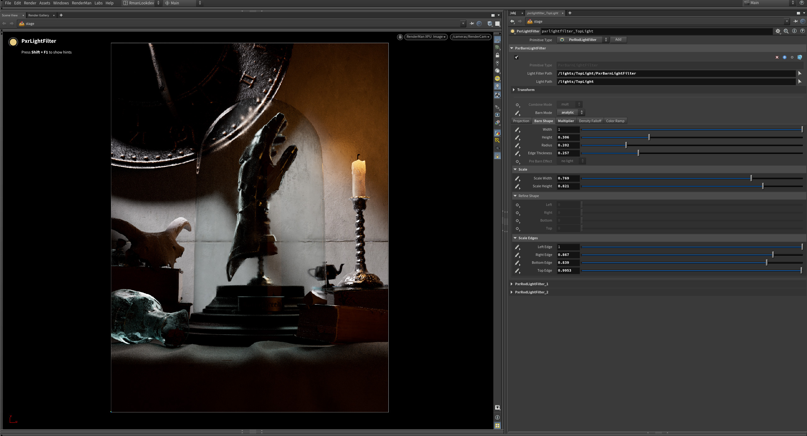

Solaris Lighting Workflow（Solaris 照明工作流）Light Filters in Solaris（Solaris 中的灯光过滤器）Light Linking in Solaris（Solaris 中的灯光链接）Mesh Lights in Solaris（Solaris 中的网格灯）EnvDayLight in Solaris（Solaris 中的 EnvDayLight）Portal Lights in Solaris（Solaris 中的门户灯）PxrAovLight in Solaris（Solaris 中的 PxrAovLight）